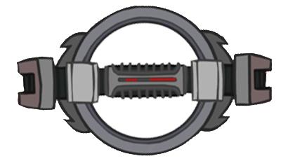
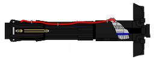
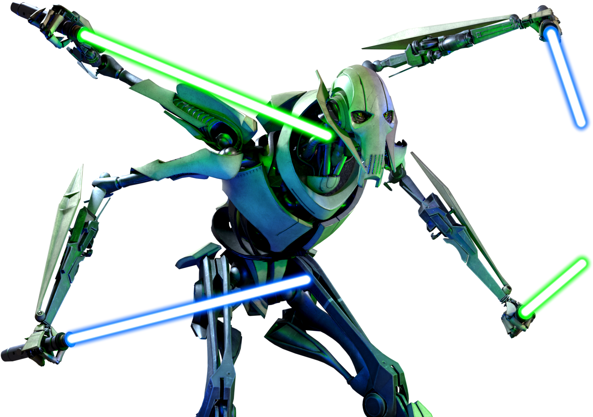

Dit is een tijdlijn van de verschillende lightsabers hoe ze voorkomen in de films en series van Star Wars
-
Anakin's Lightsaber. Deze saber kwam het eerst voor in 'iv A New Hope', maar chronologisch was hij als eerste in 'Attack of the Clones' te zien. Hoewel deze lightsaber is gemaakt door Anakin Skywalker is hij na zijn "dood" gebruikt door o.a. zijn zoon Luke Skywalker en Rey 'Skywalker'. Deze saber kent een lange geschiedenis.
-
Darth Maul's lightsaber. unieke lightsaber waarbij aan beide kanten een blade zit. Deze lightsaber kwam voor het eerst voor in 'The Phantom Menace' en was een aanzet tot meerdere dubbele lightsabers binnen de starwars universe. Darth Maul is uitgegroeid tot een van de meest populaire karakters uit Star Wars en komt in vele boeken, films en series voor.
-
De lightsaber van Count Dooku. Een uniek exemplaar vanwege de gebogen vorm. Dit is bewust gekozen door de graaf zelf. Door deze vorm kan hij zijn stijl van vechten perfect uitvoeren. zijn lightsaber wordt als eerste gezien in 'Attack of the Clones' en later ook in Episode iii 'Revenge of the Sith'.
-
 Na 'order 66' waren alle jedi zo goed als uitgeroeid. zij die overbleven werden achtervolgd en geexecuteerd. Dit was de taak van 'inquisitors'. Dit is een lightsaber van de 'Grand Inquisitor'. deze lightsaber kon ronddraaien en zelfs zorgen voor een zachte val als een soort helikopter. Deze lightsaber is voor het eerst te zien in de serie 'Star Wars Rebels' en later ook in de live-action serie 'Obi-Wan Kenobi'.
-
 Jaren later, pas in film vii: 'the force awakens' zien we een nieuw type lightsaber in gebruik door Kylo Ren. zijn lightsaber is gemaakt met een gebroken kyber kristal, de krachtbron van een lightsaber. Hierdoor krijgt het vlammen aan de uiteinden en klinkt de lightsaber alsof het elk moment uit elkaar kan barsten. Deze lightsaber is een voorganger voor lightsabers uit de boeken reeks 'the high republic' waar we meer lightsabers zien met crossguards (de dingen aan de zijkanten).
-
